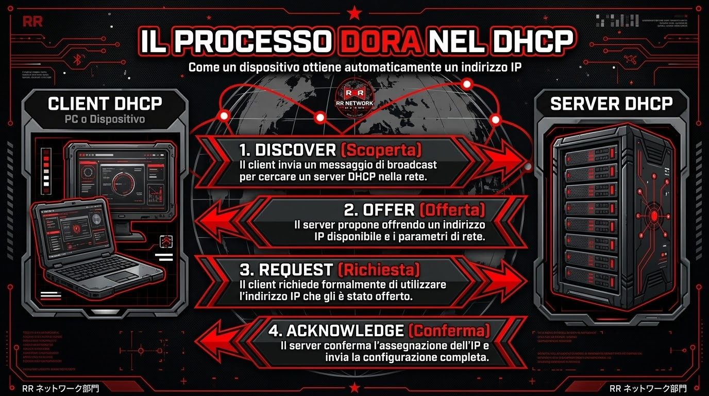
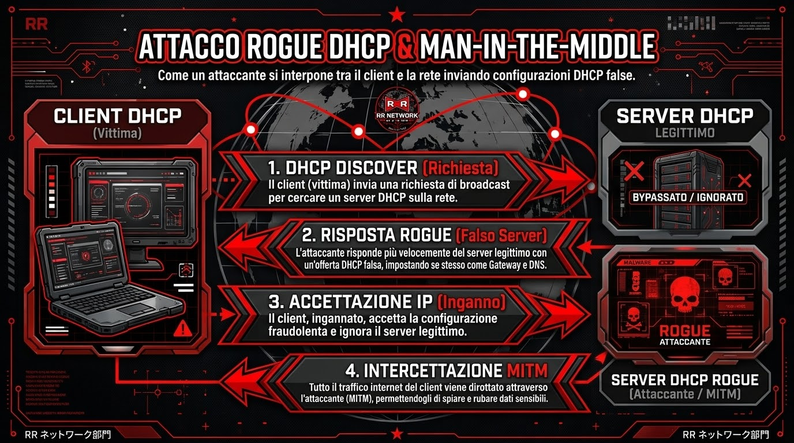
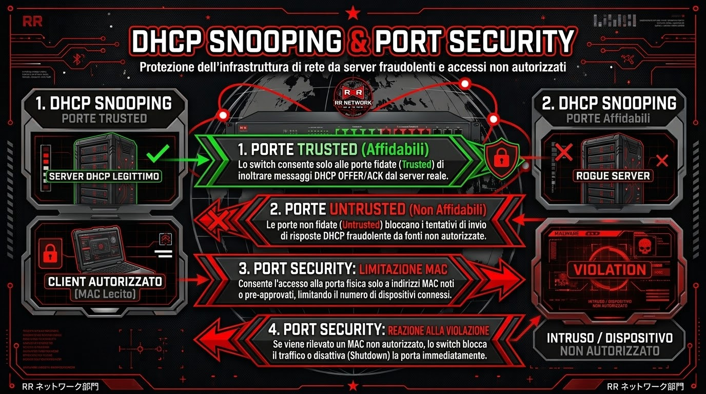

Il Dynamic Host Configuration Protocol (DHCP) è quel lavoratore instancabile e invisibile che ci permette di connetterci a una rete senza dover impazzire a configurare parametri a mano. Operando sulle porte UDP 67 e 68, il suo compito è assegnare automaticamente un indirizzo IP, la Subnet Mask, il Gateway e il server DNS a qualsiasi dispositivo ne faccia richiesta. Questo processo avviene tramite uno scambio di quattro messaggi noto come DORA (Discover, Offer, Request, Acknowledge). Dalle reti del Wi-Fi di casa fino ai giganteschi data center aziendali, il DHCP è la tecnologia fondamentale che rende le reti scalabili e di facile accesso.

Essendo nato negli anni '90, il DHCP ha privilegiato la facilità d'uso rispetto alla sicurezza, omettendo del tutto i controlli di autenticazione. Un computer, infatti, accetta ciecamente i parametri di rete dal primo server che gli risponde, e le richieste iniziali vengono "urlate" in broadcast a tutta la rete locale, permettendo a chiunque sia collegato di intercettarle. Oltretutto, il server assegna l'IP fidandosi esclusivamente dell'indirizzo fisico (MAC Address) della scheda di rete del client, un dato facilissimo da falsificare via software.
Questo spalanca le porte a due attacchi devastanti. Il primo è il DHCP Starvation (l'esaurimento degli IP): l'hacker usa un software automatico per inondare lo switch di migliaia di finte richieste di connessione, inventando ogni volta un MAC Address diverso. Il server legittimo alloca un IP per ogni finta richiesta fino a esaurire del tutto la sua riserva. In pochi secondi, nessun nuovo utente riuscirà più a connettersi alla rete.
Spesso, questa tecnica serve a spianare la strada al colpo vero e proprio: il Rogue DHCP Server. L'attaccante collega il proprio PC alla rete aziendale configurandolo come un server DHCP falso. Senza più la concorrenza del server legittimo (ormai svuotato), il Rogue DHCP vince la gara di rapidità e inizia ad assegnare ai dispositivi dei dipendenti parametri malevoli. Imposterà sé stesso come Gateway per intercettare tutto il traffico (attacco Man-in-the-Middle) e fornirà un server DNS alterato per deviare la navigazione verso siti di phishing identici a quelli veri, con lo scopo di rubare le password.

Per fortuna, gli amministratori di rete hanno ottime armi per difendersi configurando a dovere gli switch aziendali. La difesa assoluta contro i server falsi si chiama DHCP Snooping: lo switch viene istruito a fidarsi (Trusted) esclusivamente della porta fisica a cui è fisicamente agganciato il vero server DHCP. Tutte le porte degli utenti sono considerate Untrusted; se da una di queste arriva un pacchetto di assegnazione IP, lo switch lo scarta all'istante e disabilita la presa, "fulminando" il computer dell'hacker.
Per stroncare sul nascere la Starvation si usa invece la Port Security, imponendo un limite massimo rigidissimo (es. 2 o 3) ai MAC Address che possono transitare su una singola porta del muro. Se l'hacker tenta di generarne migliaia, la porta si spegne in automatico. Nelle aziende più strutturate, si usa direttamente il protocollo 802.1X, che richiede credenziali aziendali valide prima ancora di permettere al computer di avviare il processo DHCP.

Come facciamo ad accorgerci che un attacco DHCP è in pieno svolgimento? I segnali (Indicatori di Compromissione) sono abbastanza rumorosi. Sui PC Windows delle vittime inizieranno a comparire fastidiosi pop-up con il messaggio "Rilevato conflitto di indirizzi IP". Navigando su internet, i browser mostreranno continui avvisi di "Certificato non valido" a causa del DNS malevolo che sta tentando di dirottare la vittima verso siti falsi.
Lato amministratore, i software di monitoraggio segneranno che il 100% degli IP disponibili è stato assegnato in pochissimi minuti, magari in orario notturno, e i log degli switch esploderanno di porte mandate in blocco difensivo (stato di err-disabled). Basterà aprire il prompt dei comandi di un PC colpito e digitare ipconfig per avere la conferma finale: il Gateway non punterà più al router aziendale, ma all'indirizzo di una postazione locale. L'hacker è dentro la rete.